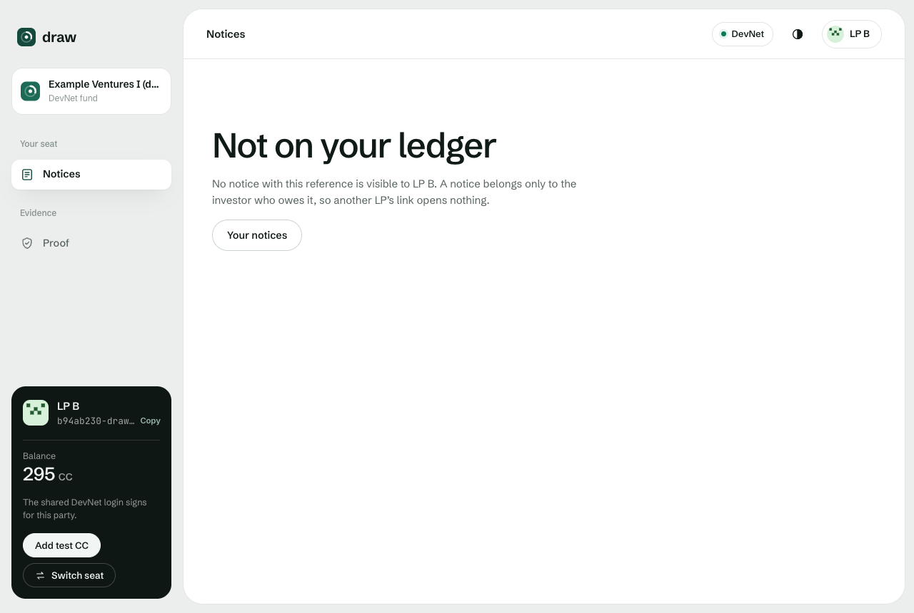
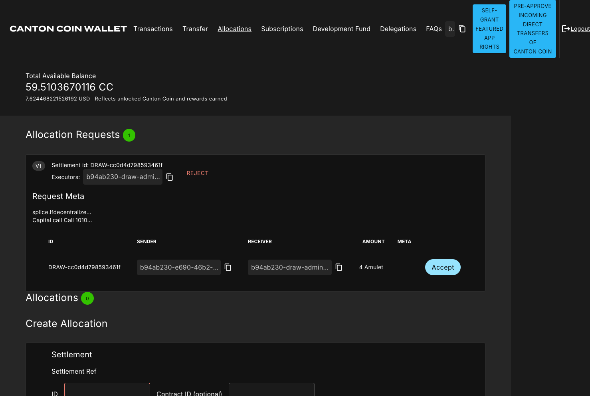

draw
DRAW runs a fund’s capital call on Canton. Each LP gets a private notice and pays it in a Canton token, and the money counts only once the ledger confirms it.
Live on Canton DevNet: drawcalls.xyz
1 / 11A notice is just an email, so fake ones work. And someone matches wires to LPs by hand before the fund knows what it can invest.
Our hypothesis, drawn from public sources.
“A wide range of scams using fake capital call or drawdown notices, falsified invoices or fraudulent loan repayment instructions has been detected.”Luxembourg Financial Intelligence UnitTrend alert, November 2025
The operations lead at an emerging fund manager, or the administrator who runs calls for several of them.
The question DRAW answersHow much of this call is deployable right now, and what’s still unresolved?
Issue
The fund issues one call. Each LP gets a private notice.
Pay
The LP locks the exact amount in a Canton token allocation.
Settle
One transaction checks the amount and moves the coin to the fund.
Verify
A separate read-back finds the settlement on the ledger. Only then is the notice verified funded and the money deployable.
Two LPs paid and one didn’t. The fund sees exactly what it can deploy and what’s still open.
Scripted DevNet run, each party signing with its own key, all five keys on one machine. Test Canton Coin, scenario dollars.
Call 1, three LPs
Due time passed
Deployable now
$750,000
Unresolved
$250,000
A notice exists only if the fund issued it on the ledger, and only its LP can read it. Nothing comes back for anyone else.
On DevNet one backend login reads for every demo seat. Separate logins per LP were tested on LocalNet.
Signed in as LP Bdrawcalls.xyz/app/notices/‹LP A’s reference›

The call shows up in the LP’s Canton Coin wallet as a payment request. The LP presses Accept.
9 of 9 steps on drawcalls.xyz, from sign-in to verified funded. We signed in as the LP with our own HackCanton login. On 2026-10-09 a person outside the team paid as an LP too.

Database with a paid flag
4of 5 got through
An unpaid LP marked funded, another LP’s notice read, a payment reused, a row counted as money.
DRAW on Canton
0of 5 got through
The ledger refused every one.
Each notice is visible only to the fund and that LP, and the coin moves in the same atomic transaction that updates the notice.
LocalNet. The database attacker had write access, as an operator or a compromised app server would.
83/83
lifecycle checks, every party signing with its own key
76/76
custody checks, every party signing with its own key
100/100
generated calls with no false funding and no leaks
15/15
deliberately broken guards caught
Administrators
One administrator runs calls for several emerging managers, so one relationship reaches several funds.
Shadow one real call
DRAW runs next to the fund’s spreadsheet until the call closes. No money moves.
First paid calls on TestNet with USDCx
A dollar settlement asset whose registry lists the same allocation API DRAW uses today. Not yet run.
HypothesisPer-fund pricing for managers, per-call for administrators. No interviews held yet.